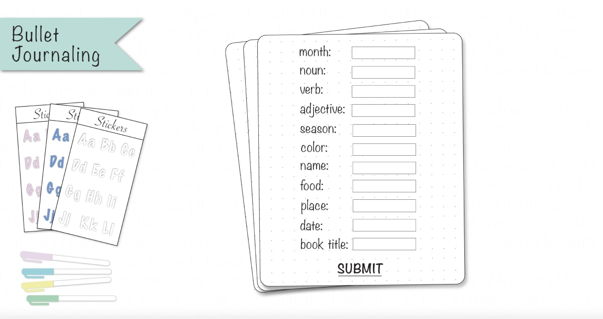

Ideation

Brainstorming
While brainstorming ideas, I thought of themes that could result
in a story: text messaging could form a conversational story,
recipe ingredients and instructions could form a fun narrative,
and fortune telling could produce a fun little fortune story.
After a few days of contemplating, I finally thought of bullet
journaling and addressed the storytelling constraint by forming
stories in smaller sections.
Digital Sketches
form page


I designed two different interfaces for my mad libs game. The first
interface includes the mad libs form for users to fill out and the
second page presents the journal with the user’s inputs.
Inspired by my favorite childhood book, “Chicken Soup with Rice'' by
Maurice Sendak, my goal was to write a unique poem for each month.
There would be 8 lines per poem and every other line would rhyme. To
fill the rest of the journal, I looked up several bullet journaling
ideas on Pinterest.
Organizing My Designs
In order to smoothly and quickly change the overall design for all
12 months, write different poems, change the calendar dates and
important events, and export each design, I organized my layers
based on each month’s theme and text content and toggled with the
visibility and lock tool in Illustrator. Then, I went ahead and
exported each design as an svg file because I wanted my graphics
to look as clear as possible.